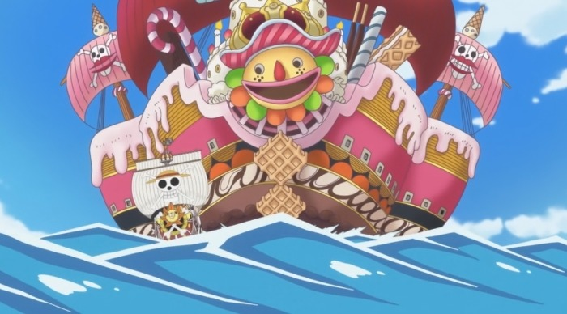
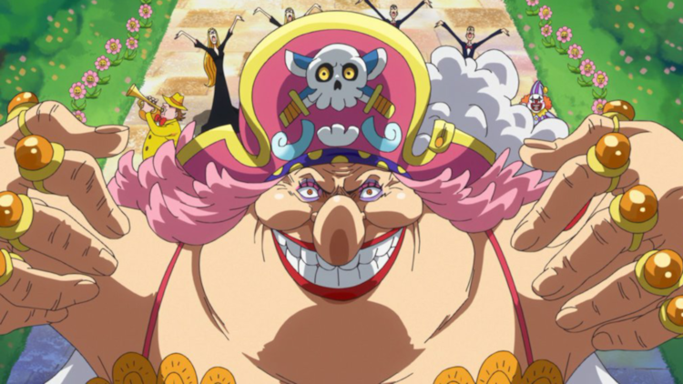
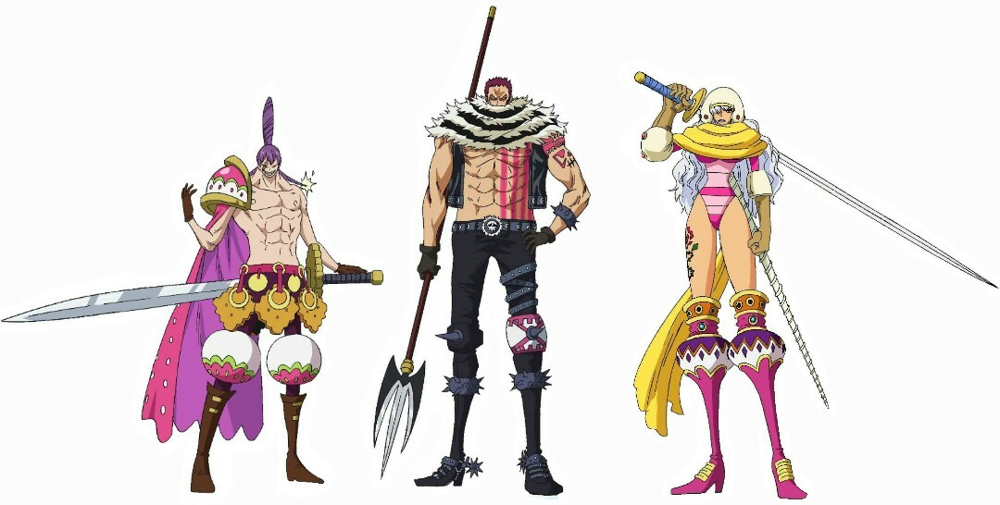
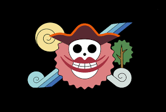

Big mom Family

빅맘해적단
사황의 일원 '빅 맘' 샬롯 링링이 이끄는 해적단.
사황의 일각답게 어마어마하게 강력한 전력을 자랑하며 그 수는 일개 해적단의 범주를 넘어서 최소 수 만에 달한다.[1] 본거지 토트랜드의 경우에는 일개 섬을 넘어서 34개의 섬으로 이루어진 해역으로 사실상 선장 빅 맘이 황제로 군림하고 있는 제국이다. 토트랜드를 제외하고도 사황답게 신세계 각지에 수 많은 섬들을 영토를 거느리고 있다. 빅 맘의 영토는 단 것을 아주 좋아하는 빅 맘에게 과자를 무조건 상납해야 한다. 어인섬은 매달 10톤의 과자를 바친다. 과자를 바치지 못하는 지역을 기다리고 있것은 분노한 빅 맘의 응징이다.
이 세상 모든 종족들이 평등하게 사는 나라를 만드는 것이 목표인 빅 맘의 해적단답게 굉장히 다양한 종족들이 속해있다. 없는 종족이 없는 샬롯 패밀리를 제외하고도 밍크족 페콤즈, 족장족 타마고 남작이 빅 맘 해적단의 일원이다. 비록 지금은 탈퇴했지만 어인 해적단을 거느리고 있었을 때는 인어와 어인들도 있었다. 이들이 평범한 인간 선원들과 차별 받은 것도 아니다. 타마고 남작은 실력을 인정 받아서 빅 맘에게 '나이트'라는 칭호도 받았다. 유사 인류들은 자칫 잘못하면 노예로 팔려가는 세계라는 것은 해적단치고 굉장히 선진적이다.
밀짚모자 일당과 독자들에게 사황이라는 벽이 얼마나 높은지 제대로 보여주었다. 루피는 빅 맘은 커녕 해적단의 최고 간부도 혼자의 힘으로 이길 수 없었다. 물론 빅 맘 해적단도 적잖은 피해를 입었지만(아래 문단 참조), 페드로의 장렬한 산화와 어인 해적단, 빈스모크 가문의 희생, 그리고 막대한 주인공 보정이 없었다면 상디를 구하러 갔던 밀짚모자 일당은 꼼짝없이 토트랜드에서 몰살당했다.
구성원
사황 빅맘 식인종. 사진과 같이 죤나 무섭게 생김.

스위트 삼장성

- 카타쿠리
- 크래커
- 스무디
샬롯패밀리
빅 맘의 자녀들
나이트
타마고 남작
비숍
'복수자' 보빈
룩
카포네 갱 뱃지였는데 통수침
빅맘해적단 기
